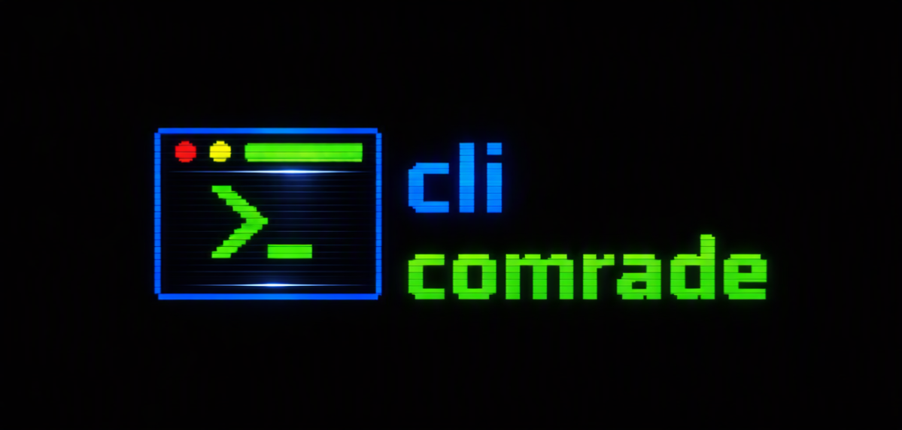

$ comrade fix
Son başarısız komutu teşhis eder, çözüm önerir.

Windows, macOS ve Linux'ta çalışır. Ne istediğini gündelik dille söyle — komutları comrade çıkarır.
// ne yapar
Son başarısız komutu teşhis eder, çözüm önerir.
Serbest metin isteği çok adımlı plana çevirir ve moda göre çalıştırır.
Bir komutu çalıştırmadan bayrak bayrak açıklar.
Bağlamı koruyan interaktif sohbet.
// davranış modları
Her adımı kendisi çalıştırır.
Her komuttan önce gerekçe + komutu gösterir, onay ister.
Hiçbir şey çalıştırmaz — sebebi ve çözümü açıklar.
// güvenlik
// sağlayıcılar
// kurulum
curl -fsSL https://raw.githubusercontent.com/firatkutay/cli-comrade/main/scripts/install.sh | sh
irm https://raw.githubusercontent.com/firatkutay/cli-comrade/main/scripts/install.ps1 | iex
PowerShell'de çalıştır.
brew install firatkutay/tap/comrade
scoop bucket add firatkutay https://github.com/firatkutay/scoop-bucket
scoop install comrade
winget install cli.comrade
onay bekliyor Microsoft moderatör onayı bekleniyor.
sudo snap install cli-comrade --classic
yakında Snap Store'da yayına hazırlanıyor.
Kurduktan sonra:
comrade init
(shell hook + sekme tamamlama)
·
comrade auth login